飞翔教学资源助手使用帮助（登录下载教材）
飞翔教学资源助手是一个国家中小学智慧教育平台资源以及课程资源下载解析工具，它可以方便地从国家中小学智慧教育平台下载PDF书籍、课件、教案等资源，方便预习或复习或备课等。
免登录下载教材的教程点击这里查看。
免登录下载课程资源的教程点击这里查看。
登录下载课程资源的教程点击这里查看。
视频版教程（手动设置登录信息方式登录）：BiliBili
使用教程：
1.第一次打开下载程序时，需要配置登录信息：
建议选择直接登录，仅直接登录无法登录时才建议选择手动设置登录信息方式登录。
直接登录按照提示登录即可
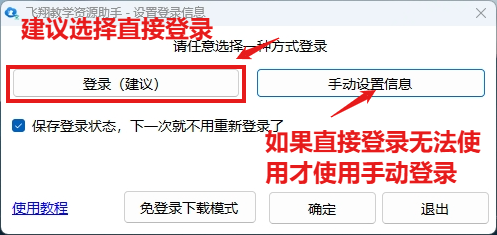
手动设置登录信息方式登录教程：
（1）点击登录按钮，在浏览器打开登录页面，登录完成后不要关闭浏览器。
（2）点击寻找教材按钮，随便选择一份教材，打开教材页面。
（3）浏览器F12或者Ctrl+Shift+I打开开发工具，选择"网络（Network）"项，在左下角的文件列表找到%XX%XX开头的文件，旧版本教材是"pdf.pdf"文件，如果没有，请尝试刷新页面再重试，如果有多个，随便选择一个即可。在右边找到"标头（Header）"项，在请求标头里找到"x-nd-auth:"项，把里面的信息复制粘贴到下面的文本框即可。
X-Nd-Auth格式类似以下：MAC id="XXXXXXXXX...",nonce="XXXXX...",mac="XXXXX...."
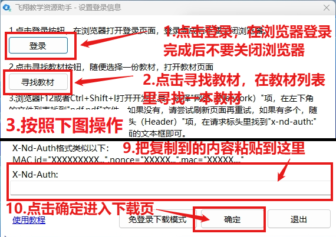
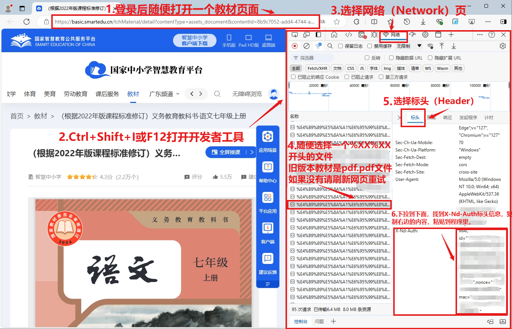
2.打开下载程序，点击“寻找资源-寻找教材”按钮，打开教材页面。
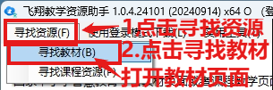
3.选择你要下载的教材，这里以“道德与法治一年级上册”为例。
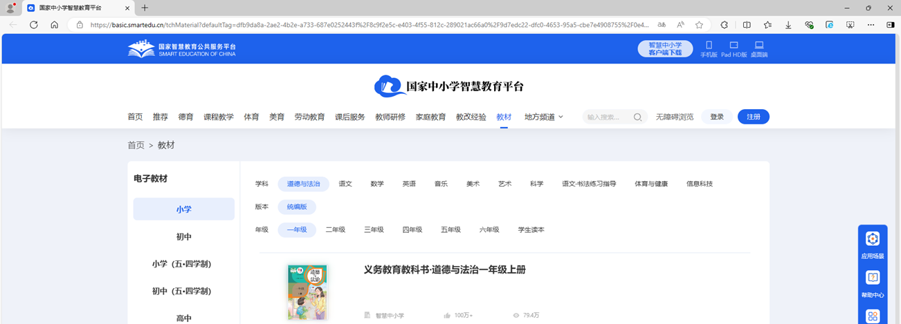
4.打开后复制地址栏的链接，粘贴到程序的“页面链接”处
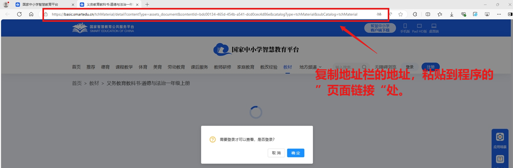
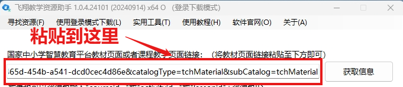
5.点击“获取信息”获取电子书信息。
6.点击“保存电子书”下载电子书文件。
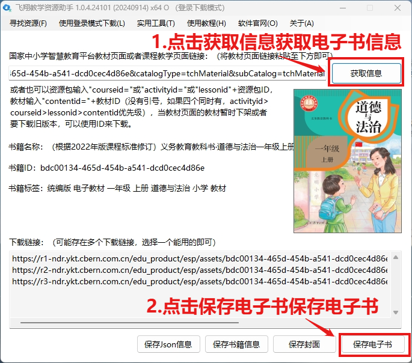
7.保存文件
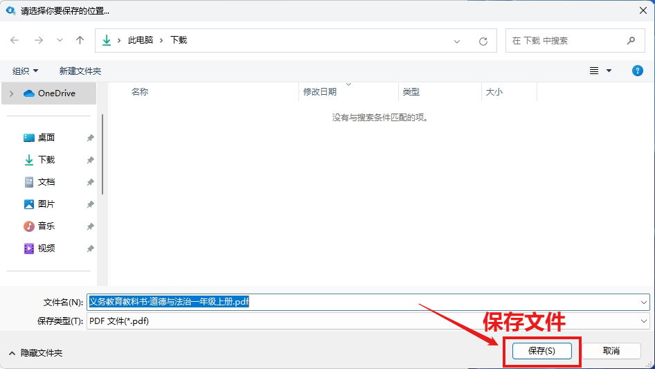
8.耐心等待下载完成
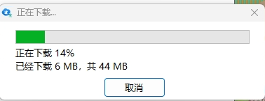
9.使用阅读器打开电子书即可阅读。
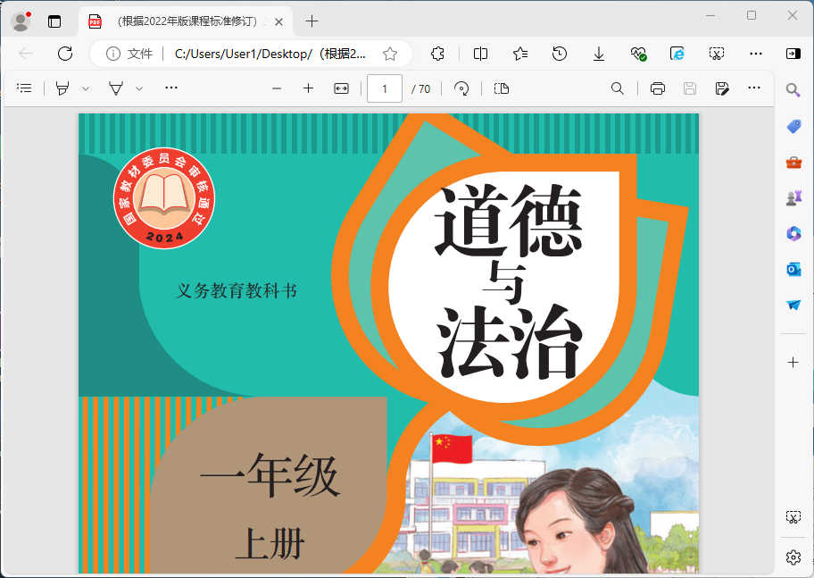
Q&A
1.Q:我应该怎样选择下载的版本？
A:根据你的计算机架构选择对应版本下载即可。计算机架构查看方式：Win+R输入cmd.exe回车运行，输入echo %PROCESSOR_ARCHITECTURE%即可查看你的计算机架构，x86就下载x86版本，AMD64就下载x64版本。点击这里下载，下载安装后运行即可。
2.Q“X-Nd-Auth”是什么？
A:“X-Nd-Auth”是你的登录信息，请妥善保管你的登录信息，不要轻易泄露给别人。本程序仅利用该信息下载电子课本等链接，自身不存储该信息。
3.Q:我设置了错误的“X-Nd-Auth”怎么办？
A:你可以随时在菜单栏的“修改登录信息”修改该信息。
4.Q:解析链接时提示“远程服务器返回错误: (404) 未找到。”？
A:请检查你的下载链接是否正确，下载程序无法从官方服务器获取到该教材的信息。
5.Q:点击解析链接卡住、无响应或提示连接超时？
A:请检查你的网络连接，以及本软件是否被杀毒软件以及防火墙拦截联网，本软件需要通过网络获取以及下载教材信息。
6.Q:下载提示“远程服务器返回错误: (401) 未经授权。”？
A:该链接需要登录才能下载，请输入正确登录信息后下载该文件。
7.Q:解析链接提示“未能加载文件或程序集“Newtonsoft.Json.dll......”或它的某一个依赖项。系统找不到指定的文件。”？
A:请检查程序运行目录是否存在Newtonsoft.Json.dll，如果没有请重新下载安装本程序。
8.Q:我获取了“https://r1-ndr-private.ykt.cbern.com.cn，https://r1-ndr-doc-private.ykt.cbern.com.cn”开头的链接，如何下载？
A:该链接需要登录后下载，在飞翔教学资源助手使用登录下载模式登录后在菜单栏的“实用工具”—“下载链接”下载即可。
9.Q:我下载电子课本后复制出来的内容是一个字一行或一段话分行更多怎么方便处理？
A:你可以使用本工具的菜单栏的“实用工具”—“多行文本合并为一行”方便处理。
10.Q:我下载电子课本后想方便把PDF转成图片，放到希沃白板，PowerPoint等软件，如何处理？
A:你可以使用本工具的菜单栏的“实用工具”—“PDF转图片”方便处理，处理完成把图片复制到课件中即可。
11.Q:下载提示“无法建立安全的TLS/SSL连接”？
A:有一定机率可能会出现此问题，你可以重启程序或者等一下再解析下载资源，可能是因为VB.net底层下载调用的是IE的组件，这是系统的问题。
备注：如果有程序问题可以在这里反馈
返回主页